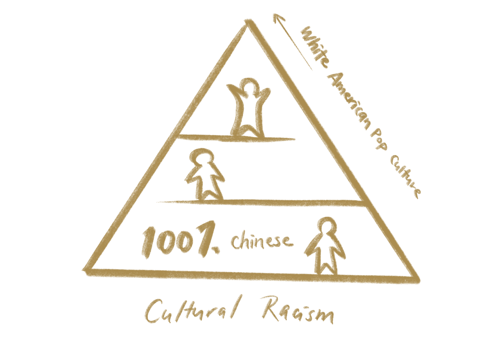

In the past and present, we have been using race, gender, ethnicity, nationality, etc. to define our identities. But they continue to be less and less applicable and relevant in today's world as fewer truly monocultural communities exist. United States have been a melting pot for years, yet we still tend to singularly label people with race as the dominating identity, which has become a major social issue.
We are commonly labeled by our race and ethnicity. As the world becomes more and more interconnected, with more and more cross-cultural kids (CCKs) – people who have meaningfully interacted with two or more cultural environments for a significant period of time during developmental year, for example children of immigrants, international adoptees, children of refugees, bi-racial and multicultural-cultural children – has this labeling system become obsolete? How do we fully represent our identity?
One who is creating a cultural standard and imposing a cultural hierarchy among racial groups.
I went to an international elementary school in Beijing, where my peers were all cross cultural kids, primarily American born asians, citizens from all around the world, and a lot of mixed people who were half Chinese.
My elementary school peers were the epitome of cultural racists, they placed Chinese culture at the bottom of their cultural hierarchy, and anything other than Chinese was above it, such as Japanese, Korean, Vietnamese, Nigerian culture, and white American pop culture was the golden standard, it was the most superior culture, and people judged others based on how well they know or assimilate to it. For instance, I've been bullied for not knowing what Hannah Montana and Justin Bieber were, or being bad at football, in which my peers commented “You’re so Chinese” to me as an insult. As a result, the adjective “Chinese” was a devaluing description, and it resulted in my identity crisis due to experiencing this cultural racism in my early developmental years.
10 years later, however, we see another cross-cultural kid Eileen Gu making a completely opposite, culturally antiracist decision when it comes to her identity. Eileen Gu is a half Chinese and half Caucasian skier. She was raised by her single Chinese mother and grandmother in San Francisco, and she visits China every summer.
Eileen Gu’s controversy started when she announced she will be competing for team China instead of USA for the 2022 Winter Olympics: “I am proud of my heritage and equally proud of my American upbringing. The opportunity to help inspire millions of young people where my mom was born, during the 2022 Beijing Olympic Winter Games is a once-in-a-lifetime opportunity to help to promote the sport I love. Through skiing, I hope to unite people, promote common understanding, create communication, and forge friendships between nations. If I can help to inspire one young girl to break a boundary, my wishes will have come true.”
Since then, she has been constantly receiving backlashes from mainstream media like the BBC. A news reporter of Fox News called her a traitor for the money. The economist photoshopped her skiing pictures into racist images, like picking her up with chopsticks, and making her ski through mountains of cash in an uncomfortable color scheme. These all exemplify the cultural racism in our mainstream media or society, as mainstream media cannot interpret people’s feeling of belonging to what they consider a more “inferior” culture.
After receiving two gold medals and one silver, almost 7000 people have signed a petition to urge Stanford to revoke Eileen Gu’s Admission this fall. This illustrates the difficulties cross-cultural people face when trying to embrace a culture lower down the hierarchy in mainstream media.
Eileen Gu spoke in one of her recent interviews that she is Chinese when she’s in China, and American when she’s in the US. She said there’s no one path that fits her well, so she’s going to forge her own way. Personally, I found her way of dealing with cultural and national identities to be very inspiring, and it gave me relief to the cultural racist experience I had in elementary school. I feel motivated to be prouder and embracing and feeling belonging to both of my cultural identities.
Eileen Gu connects to many who embrace multi-cultural backgrounds. I believe her experience of forging her own path would inspire many other TCKs and CCKs, instead of the old ways of having to choose one to conform to.
"Identity is something which can only be defined by my present. My past or what could be of my future is not my identity. It is created by me and I can destroy it if I want to."
"To me it’s the light at the centre of my core, and dictates how I express myself, my many emotions and it’s what drives my inspiration."
"Like many immigrant offspring I felt intense pressure to be two things, but one plus one did not equal two but zero, my conflicting selves always canceling each other out. Why is there pressure to choose between her two identities? Do people have to choose one identity?"
"My perception when I was younger as a bi-cultural kid was like I fell short at both ends, shuttling between two dimensions that had nothing to do with one another."
"Knowing where you come from, your history—be it family or race, acknowledging how you were raised, and understanding why you are the way you are."
"Being Indian-American is confusing to me at times. Sometimes I felt I had to hide my identity, which is probably my internalized cultural racism?"
"As a children of immigrant parents, I often felt caught between 2 cultures, and tempted to adopt a double identity because I don’t want to reject all the values of my original culture but also don’t want to comply with my parents’ vision and obey them in everything, at the risk of forgetting who I really am. To cope with this problem,I adopt 2 personalities, one at home with my family and the other with my friends or at school."
"I like what Obama said about 'BECAUSE RACE IS SO IMPORTANT IN OUR SOCIETY, SOME ARE UNSETTLED WHEN THEY CAN'T PLACE SOMEONE RIGHT AWAY'"
"National pride seems to teach people that they are better just because they were born in a particular geography. That’s a good way to justify hurting others, which is a good way to stir up anger, acrimony and violence."
"Not much to me. But it's clearly a bigger issue with smaller countries and those with a small population of people speaking a given minority language."
"I think even in the age of globalization national identity is still important. In the end a nation is the largest unit of natural solidarity."
"Nationality, it seems to me is just one of many things which “give identity.” It’s really difficult to be a citizen of the world since it’s almost impossible to support all countries equally."